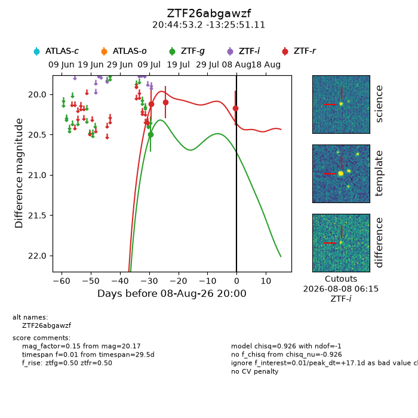
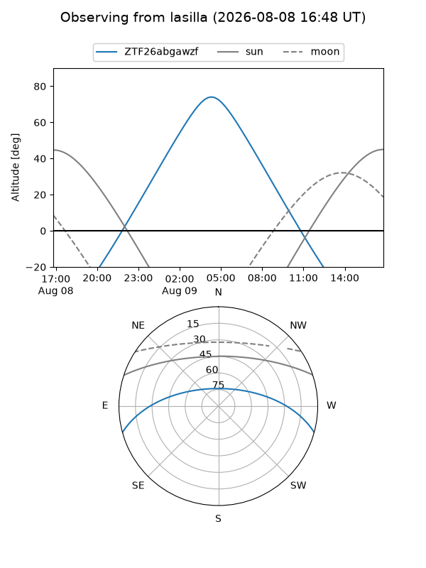
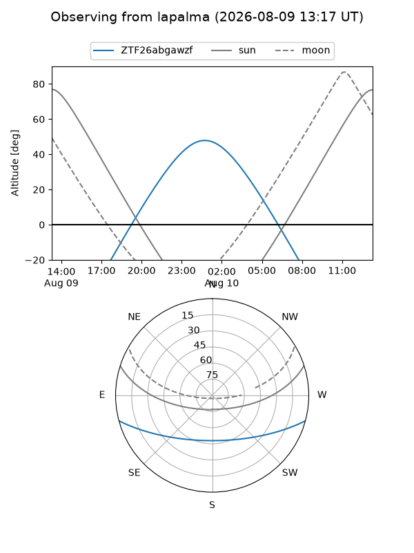
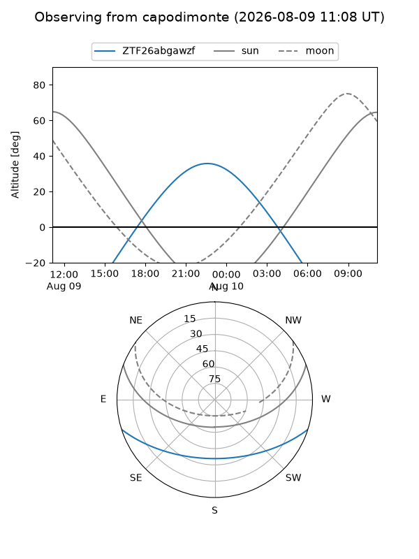
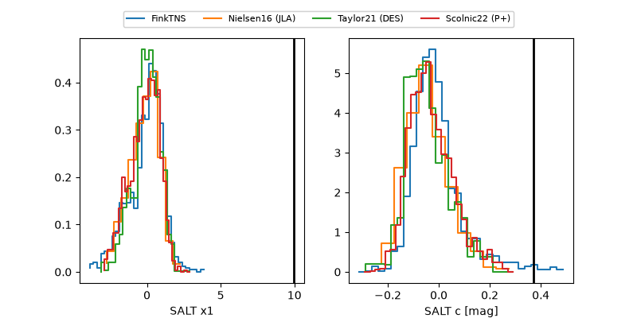

ZTF26abgawzf
Target ZTF26abgawzf at 2026-08-09 08:00
Aliases and brokers:
FINK-ZTF: ztf.fink-portal.org/ZTF26abgawzf
Lasair-ZTF: lasair-ztf.lsst.ac.uk/objects/ZTF26abgawzf
ALeRCE-ZTF: alerce.online/object/ZTF26abgawzf
Direct TNS query: direct search
alt names
ZTF26abgawzf (ztf,fink_ztf)
Coordinates:
equatorial (ra, dec) = 311.2217,-13.43086
equatorial (HMS+DMS) = 20:44:53.22,-13:25:51.11
galactic (l, b) = (33.1976,-31.14017)
Flags:
peak dt: +17.6
Photometry:
last ztfg=20.49, ztfr=20.17
1 ztfg, 3 ztfr detections
Lightcurve

Visibility



Additional plots
